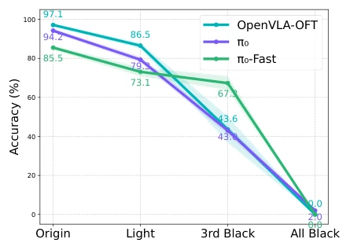
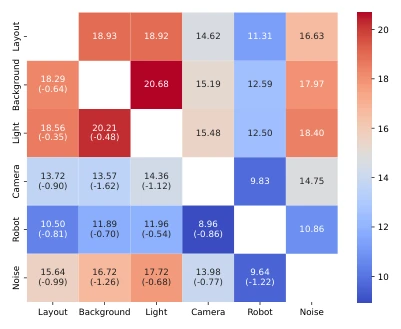
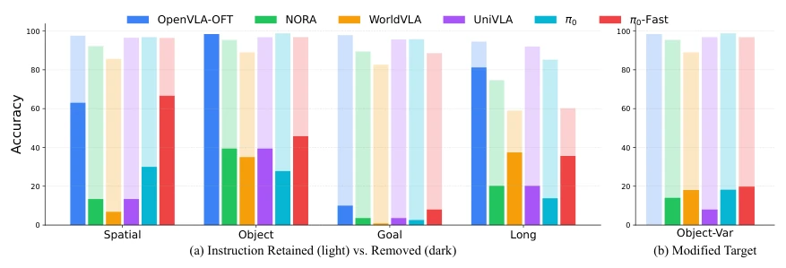
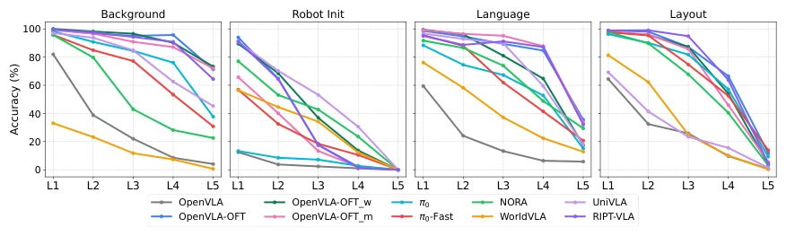
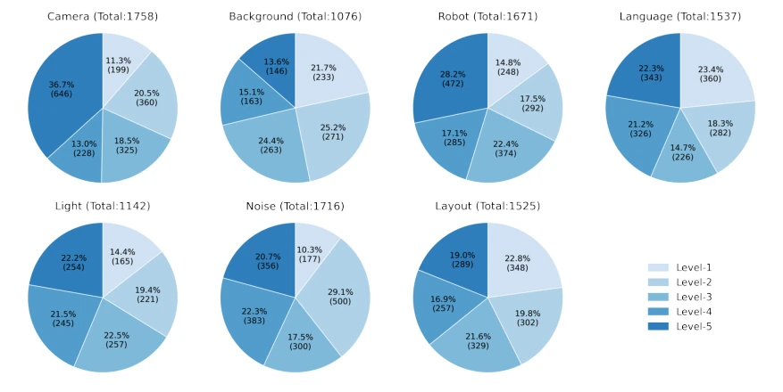
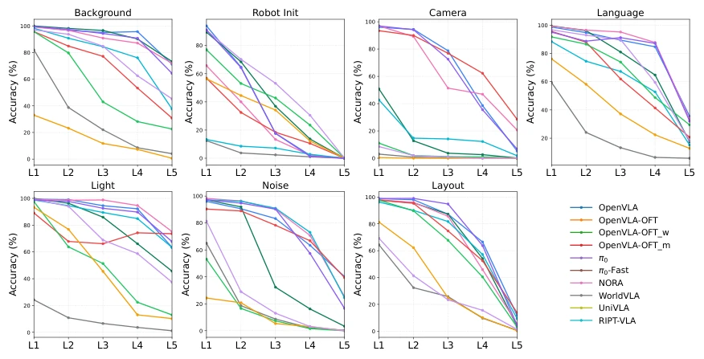
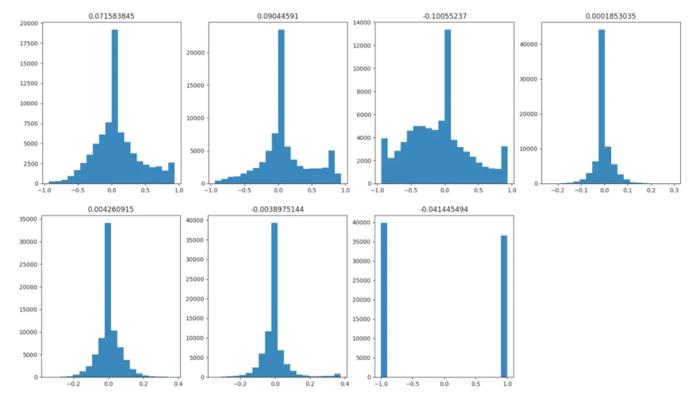
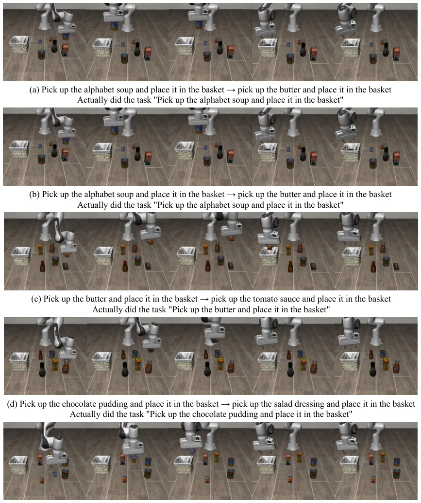
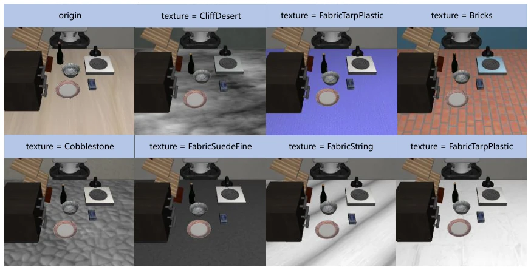
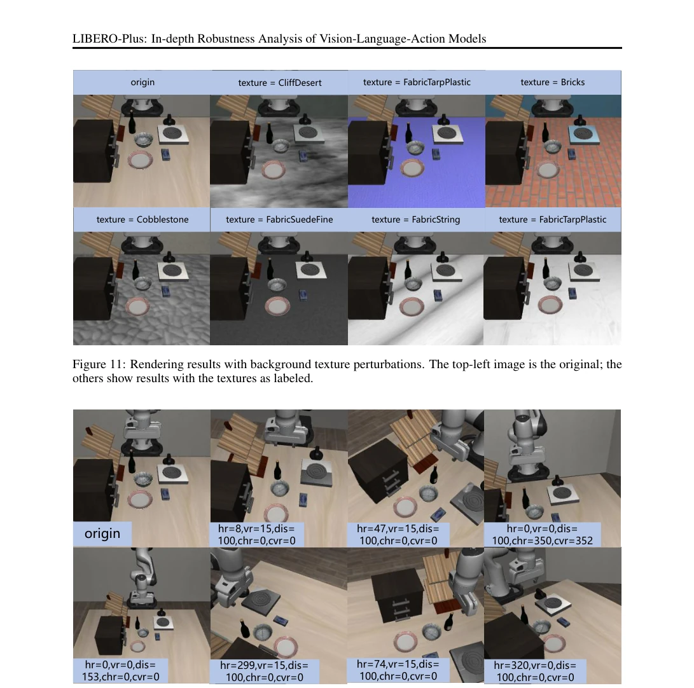

This paper pours cold water on the currently popular VLA models. Although scores on LIBERO appear impressive, once the viewpoint shifts or lighting dims, the model's true limitations are exposed, with success rates plummeting from 95% to below 30%. Most ironically, language instructions are largely ignored; the model appears to be memorizing action trajectories rather than understanding tasks. The wrist camera becomes a lifeline, while under combined perturbations, negative correlations collapse. Although LIBERO-Plus constructs a new benchmark, it essentially functions as a 'fault-finding session', exposing the awkward reality that current VLA models rely on visual shortcuts rather than true generalization. This is not merely an evaluation issue but an architectural defect, reminding the community not to be blinded by benchmark scores.
研究动机Motivation
现有 VLA 模型在标准基准（如 LIBERO）上表现优异，但评估方法过于静态（Liu et al., 2023），掩盖了模型在真实环境变化下的脆弱性。Kim et al. (2024) 等模型虽在受控仿真中接近完美，却难以处理视角、光照或初始状态的微小扰动。这种“高分低能”现象阻碍了具身智能的落地。现有工作缺乏对多模态输入鲁棒性的系统性量化，导致社区误以为高成功率等于真能力。本文旨在揭示这种虚假繁荣，推动评估向真实多样性转变，避免模型在部署时“翻车”，强调真实场景下的可靠性而非仿真环境下的过拟合。
Existing VLA models perform excellently on standard benchmarks (e.g., LIBERO), yet evaluation methods are overly static (Liu et al., 2023), masking the models' fragility under real-world environmental changes. Models such as Kim et al. (2024) may approach perfection in controlled simulations but struggle to handle minor perturbations in viewpoint, lighting, or initial states. This 'high score, low capability' phenomenon hinders the deployment of embodied intelligence. Current work lacks systematic quantification of robustness to multimodal inputs, leading the community to mistakenly equate high success rates with true capability. This paper aims to expose this false prosperity, promote a shift in evaluation towards real-world diversity, prevent models from 'failing' during deployment, and emphasize reliability in real scenarios rather than overfitting in simulated environments.

Figure 2: Illumination robustness and extreme ablation tests. The term Light denotes the condition with light perturbation applied. 3rd Black and All Black rep- resent conditions where only the third-view image is masked and where images from both views are masked, respectively.
The overall workflow is divided into three parts: robustness analysis, benchmark construction, and enhanced training. First, seven types of perturbations (layout, viewpoint, lighting, etc.) are applied on LIBERO to quantify performance degradation. Second, a statistical definition of the Compositional Generalization Gap is proposed; interaction effects between perturbations are analyzed through covariance analysis, defining joint probability under success conditions. Next, the LIBERO-Plus benchmark is constructed, containing 10,030 tasks and 21 sub-components, graded by difficulty. Finally, an automated pipeline generates 20,000+ trajectories for mixed fine-tuning to verify the improvement in robustness through generalization training. The core innovation lies in treating perturbations as coupled noise sources rather than independent variables, and designing extreme ablation experiments (e.g., all-black images) to probe the model's dependence on visual inputs, thereby quantifying 'pseudo-robustness' and revealing whether the model truly understands the task.

Figure 4: Heatmap of conditional probabilities under pairwise perturbations. Upper triangular entries represent independence-based products of single-dimension probabilities, while lower trian- gular entries show actual joint outcomes.
Ten mainstream models, including OpenVLA, π0, and Nora, were selected and tested under seven perturbation dimensions. Results indicate that viewpoint and initial state perturbations caused drastic performance drops (e.g., OpenVLA dropped by 75%). Language perturbations had the least impact; however, performance did not significantly decline after removing instructions, confirming that the model ignores language. In lighting experiments, models equipped with wrist cameras performed more stably. A negative correlation gap exists under combined perturbations. LIBERO-Plus benchmark tests show that fine-tuning based on generalization data (+PT) increased the total success rate to 79.6%, particularly improving view robustness by 37.2%. Ablation experiments confirm that the model relies on positional memory rather than semantic understanding, revealing a fundamental defect in current VLA architectures regarding generalization capabilities.

Figure 3: Accuracy of different models on instruction removed (a) and target modified (b) tasks. Light bars: original success rate with language instruction; (a) dark bars: success rate after removing the instruction; (b) Dark bars: success rate under altered task goal and instruction (task substitution).

Figure 5: Model performance trends across perturbation difficulty levels. The line plots show the success rate of each model as the intensity of four different perturbation dimensions increases.
其他图片Other Figures

Figure 7: Proportion of tasks per difficulty level across the seven generalization dimensions.

Figure 8: Model performance trends across perturbation difficulty levels. The line plots show the success rate of each model as the intensity of all seven different perturbation dimensions increases.

Figure 9: Distribution of the 7-dimensional robot actions in the generalized dataset. Plots are arranged from top to bottom and left to right, corresponding to action dimensions 1–7.

Figure 10: Behavioral Analysis of Goal Replacement Failures. Case studies showing model responses to modified instructions. For each pair: original→new instruction (above); actually executed behavior (below). The consistent execution of original tasks despite changed targets indicates shallow language processing and strong bias toward memorized visual-action associations.

Figure 11: Rendering results with background texture perturbations. The top-left image is the original; the others show results with the textures as labeled.

Figure 12: Rendering results under background texture perturbations, comparing the original image (top-left) with transformed versions. The labels denote the following transformation parameters: hr (horizontal rotation angle), vr (vertical rotation angle), dis (distance pulled away), chr (in-place horizontal rotation angle), and cvr (in-place vertical rotation angle).